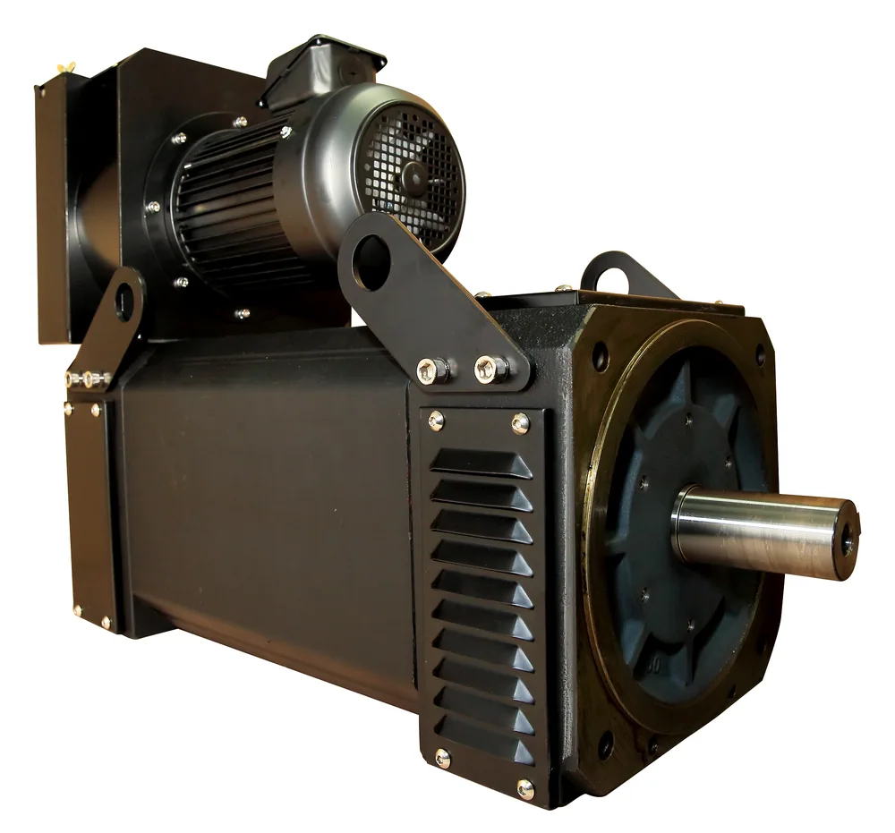
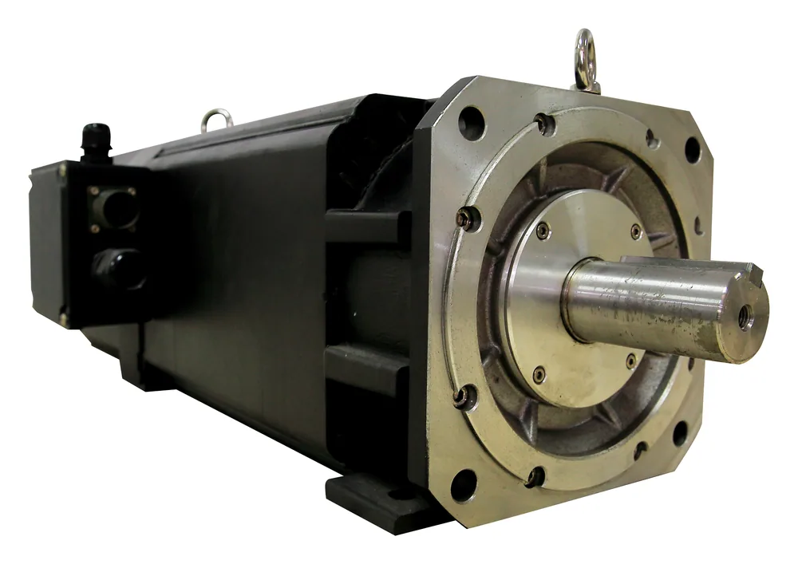

AC 서보 모터
SVMF, SVMJ 시리즈 AC 서보 벡터 유도 모터. IP54와 IP23 보호 등급, 저속 고토크.
AC 서보 벡터 모터는 저속에서 높은 토크를 내는 AC 유도 모터입니다. 우수한 전기적 특성으로 저속과 고속 모두에서 높은 성능을 유지하며, 정밀한 기계 설계로 안정성과 수명을 높였습니다. 정토크 출력으로 고정밀 모션 제어 요구를 충족합니다. 충격 부하에 대한 응답이 개선되어 벨트 구동이든 커플링 직결이든 절단 성능이 뚜렷이 향상됩니다. 소비 전력이 낮고 저소음으로 설계되었으며, 고품질 주철 프레임과 강화 절연으로 수명이 깁니다. 고속에서는 정출력을, 저속에서는 안정된 자계를 유지합니다. 전 주파수 범위에서 운전할 수 있고 영속도에서도 정격 토크를 내며 가감속이 빠릅니다. 크기가 작고 비용과 에너지 소비가 낮습니다.

SVMF IP54
프레임 19종. 모델을 선택하면 전체 사양표와 외형 치수도를 볼 수 있습니다.
| 프레임(모델) | 정격 출력(kW) | 정격 속도(RPM) | 정격 토크(N·m) | 정격 전류(A) |
|---|---|---|---|---|
| SF-100LB | 2.2–3.7 | 1000 / 1500 | 20.8–25.5 | 4.4–7.6 |
| SF-112L | 3.7–5.5 | 1000 / 1500 | 35 | 7.6–10.6 |
| SF-112XA | 5.5–7.5 | 1000 / 1500 | 51.5 | 11.6–15.2 |
| SF-112XB | 5.5–11 | 900/1800 / 1000 / 1500 | 57.8–71 | 12.6–20.5 |
| SF-132L | 11 | 900/1800 / 1000 | 104–104.1 | 22.8–25.2 |
| SF-132LA | 15–22 | 1000 / 1500 | 138–142 | 31.1–43.7 |
| SF-132MB | 15–37 | 900/1800 / 500 / 1000 / 1500 | 208–284.2 | 35–75.7 |
| SF-160L | 11–37 | 500 / 1000 / 1500 | 208.2–236.6 | 25–71.3 |
| SF-160M | 9–28 | 500 / 1000 / 1500 | 170.4–189.3 | 20–54.9 |
| SF-160S | 7.5 | 500 | 142 | 17 |
| SF-160X | 15–45 | 500 / 1000 / 1500 | 283.9–284.1 | 34–88.9 |
| SF-180L | 37–110 | 500 / 1000 / 1500 | 690.9–700.3 | 83–234 |
| SF-180M | 30–90 | 500 / 1000 / 1500 | 567.8–568.8 | 67–193 |
| SF-180P | 18.5–55 | 500 / 1000 / 1500 | 348–350.2 | 42–115 |
| SF-180S | 25–75 | 500 / 1000 / 1500 | 473.2–473.9 | 56–157 |
| SF-180X | 45–132 | 500 / 1000 / 1500 | 833.9–851.8 | 101–269 |
| SF-90L | 1.5–2.2 | 1000 / 1500 | 14.2–17 | 3.4–5.6 |
| SF-90MA | 0.75–1.1 | 1000 / 1500 | 7–7.2 | 2–2.7 |
| SF-90MB | 1.1–1.5 | 1000 / 1500 | 10.1–10.4 | 2.8–3.3 |

SVMF IP23
프레임 19종. 모델을 선택하면 전체 사양표와 외형 치수도를 볼 수 있습니다.
| 프레임(모델) | 정격 출력(kW) | 정격 속도(RPM) | 정격 토크(N·m) | 정격 전류(A) |
|---|---|---|---|---|
| SA-132L | 15–37 | 900/1800 / 500 / 1000 / 1500 | 208–284.2 | 35–75.7 |
| SA-132M | 11–30 | 900/1800 / 500 / 1000 / 1500 | 157.7–208.4 | 26–61.1 |
| SA-132S | 7.5–22 | 500 / 1000 / 1500 | 139–142.1 | 17–46.4 |
| SA-132X | 18.5–45 | 500 / 1000 / 1500 | 283.8–350.4 | 43–91.9 |
| SA-160L | 15–37 | 500/2000 / 600/1800 / 900/1800 | 283.9–388.8 | 32.2–75.2 |
| SA-160M | 30 | 900/1800 | 315.9 | 63 |
| SA-160X | 18.5–55 | 500/2000 / 600/1800 / 900/1800 / 500 / 1500 | 347–473.3 | 40.4–101.1 |
| SA-180L | 30–110 | 500/2000 / 600/1800 / 900/1800 / 500 / 1000 / 1500 | 567.8–788.3 | 83–234 |
| SA-180M | 22–90 | 500/2000 / 600/1800 / 500 / 1000 / 1500 | 416.4–583.6 | 60.2–193.4 |
| SA-180S | 30–75 | 600/1800 / 900/1800 / 1000 / 1500 | 473.2–578.3 | 62–157.2 |
| SA-180X | 37–132 | 500/2000 / 500 / 1000 / 1500 | 700.3–852.4 | 101–269.5 |
| SA-225L | 75–220 | 500/2000 / 600/1800 / 900/1800 / 500 / 1000 / 1500 | 1367–1590 | 180–434.4 |
| SA-225M | 60–185 | 500/2000 / 600/1800 / 900/1800 / 500 / 1000 / 1500 | 1136–1268 | 136–359.9 |
| SA-225S | 45–150 | 500/2000 / 600/1800 / 900/1800 / 500 / 1000 / 1500 | 851.8–946.7 | 104–291.3 |
| SA-225X | 90–300 | 500/2000 / 600/1800 / 900/1800 / 500 / 1000 / 1500 | 1704–1893 | 202–571.6 |
| SA-280L | 150–500 | 500/2000 / 600/1800 / 900/1800 / 500 / 1000 / 1500 | 2839–3315 | 334–994 |
| SA-280M | 130–440 | 500/2000 / 600/1800 / 900/1800 / 500 / 1000 / 1500 | 2368–2841 | 271–862 |
| SA-280S | 110–370 | 500/2000 / 600/1800 / 900/1800 / 500 / 1000 / 1500 | 1973–2368 | 230–734 |
| SA-280X | 165–550 | 500/2000 / 600/1800 / 900/1800 / 500 / 1000 / 1500 | 3123–3647 | 350–1100 |
SVMJ IP54
프레임 20종. 모델을 선택하면 전체 사양표와 외형 치수도를 볼 수 있습니다.
| 프레임(모델) | 정격 출력(kW) | 정격 속도(RPM) | 정격 토크(N·m) | 정격 전류(A) |
|---|---|---|---|---|
| SVM-100L | 7.5–15 | 1000 / 1500 / 2000 | 69.4–71 | 15.9–31.9 |
| SVM-100M | 5.5–11 | 1000 / 1500 / 2000 | 47.8–52.06 | 11.7–23.4 |
| SVM-100S | 3.75–7.5 | 1000 / 1500 / 2000 | 35–35.5 | 8–15.9 |
| SVM-132L | 18.5–30 | 1000 / 1500 / 2000 | 138.8–175.1 | 35.9–58.3 |
| SVM-132M | 15–22 | 1000 / 1500 / 2000 | 104.1–142 | 28.9–42.7 |
| SVM-132S | 11–18.5 | 1000 / 1500 / 2000 | 87.56–104.1 | 21.36–35.9 |
| SVM-132X | 22–37.5 | 1000 / 1500 / 2000 | 177.5–208.3 | 42.7–72.8 |
| SVM-160L | 40–62 | 1000 / 1500 / 2000 | 293.5–378.6 | 79.4–123 |
| SVM-160M | 37.5–55 | 1000 / 1500 / 2000 | 260.3–355 | 74.7–109.6 |
| SVM-160S | 30–45 | 1000 / 1500 / 2000 | 213–284 | 59.8–89.7 |
| SVM-180L | 65–110 | 1000 / 1500 / 2000 | 520.6–615.3 | 130.9–221.6 |
| SVM-180M | 55–100 | 1000 / 1500 / 2000 | 473.3–520.6 | 110.3–200.6 |
| SVM-180S | 55–75 | 1500 / 2000 | 347–355 | 110.3–150.4 |
| SVM-225L | 113–180 | 1000 / 1500 / 2000 | 852–1069 | 214–340.9 |
| SVM-225M | 96–168 | 1000 / 1500 / 2000 | 795–908 | 181.8–318.1 |
| SVM-225S | 74–120 | 1000 / 1500 / 2000 | 568–700 | 140.1–227.3 |
| SVM-80S | 0.4–1.5 | 1000 / 1500 / 2000 | 3.8–7.1 | 1.02–3.7 |
| SVM-90L | 2.2–5.5 | 1000 / 1500 / 2000 | 20.8–26.03 | 5.5–11.72 |
| SVM-90M | 1.5–3.7 | 1000 / 1500 / 2000 | 13.8–17.5 | 3.7–9.2 |
| SVM-90S | 0.75–2.2 | 1000 / 1500 / 2000 | 7.1–10.4 | 1.8–5.5 |

SVMJ IP23
프레임 17종. 모델을 선택하면 전체 사양표와 외형 치수도를 볼 수 있습니다.
| 프레임(모델) | 정격 출력(kW) | 정격 속도(RPM) | 정격 토크(N·m) | 정격 전류(A) |
|---|---|---|---|---|
| SA-132L | 30–45 | 1000 / 1500 / 2000 | 213–284 | 61.3–92 |
| SA-132M | 22–37 | 1000 / 1500 / 2000 | 175–208 | 45.5–75.4 |
| SA-132S | 15–30 | 1000 / 1500 / 2000 | 138–142 | 31.2–61.3 |
| SA-132X | 37–55 | 1000 / 1500 / 2000 | 260–350 | 75.4–110.5 |
| SA-160L | 60–90 | 1000 / 1500 / 2000 | 429–572 | 119.3–178.9 |
| SA-160M | 55–80 | 1000 / 1500 / 2000 | 381–525 | 110.6–160.9 |
| SA-160S | 45–65 | 1000 / 1500 / 2000 | 309–429 | 91.5–132.2 |
| SA-180L | 95–170 | 1000 / 1500 / 2000 | 811–906 | 184.8–330.6 |
| SA-180M | 80–145 | 1000 / 1500 / 2000 | 691–762 | 157.3–285.1 |
| SA-180S | 80–110 | 1500 / 2000 | 508–525 | 157.3–216.3 |
| SA-225L | 165–288 | 1000 / 1500 / 2000 | 1374–1573 | 308.1–537.9 |
| SA-225M | 140–245 | 1000 / 1500 / 2000 | 1168–1335 | 258.7–452.8 |
| SA-225S | 110–175 | 1000 / 1500 / 2000 | 834–1050 | 204.4–325.1 |
| SA-280L | 140–330 | 580 / 1000 / 1500 | 2210–2311 | 286–590 |
| SA-280M | 119–280 | 580 / 1000 / 1500 | 1788–1960 | 245–502 |
| SA-280S | 98 | 580 | 1612 | 197 |
| SA-280X | 153–360 | 580 / 1000 / 1500 | 2290–2519 | 308–644 |
자주 묻는 질문
IP54와 IP23은 어떻게 다릅니까?
IP54는 분진과 모든 방향의 물 튀김으로부터 보호되어 분진이 많은 환경에 적합합니다. IP23은 12.5 mm 초과 고형물과 분사되는 물로부터 보호되며 비교적 깨끗하고 건조한 장소에 사용합니다. 설치 환경에 따라 선택하십시오.
외형 치수도가 있습니까?
예. 프레임별 페이지에 외형 치수도(단위 mm)와 정격 속도별 사양표가 있습니다.
모델 가격은 어떻게 받습니까?
모델 페이지에서 '이 모델 가격 문의'를 선택하거나 제품 코드와 수량을 Zalo로 보내 주십시오. CMV가 업무 시간 내에 견적을 회신합니다. 가격은 웹사이트에 게시하지 않습니다.
납기와 보증은 어떻게 됩니까?
납기와 보증 조건은 견적서에 명시합니다.
가격 문의 또는 모델 선정 상담
업무 시간: 월요일–금요일(베트남 시간). 베트남어, 중국어, 영어로 상담 가능합니다.